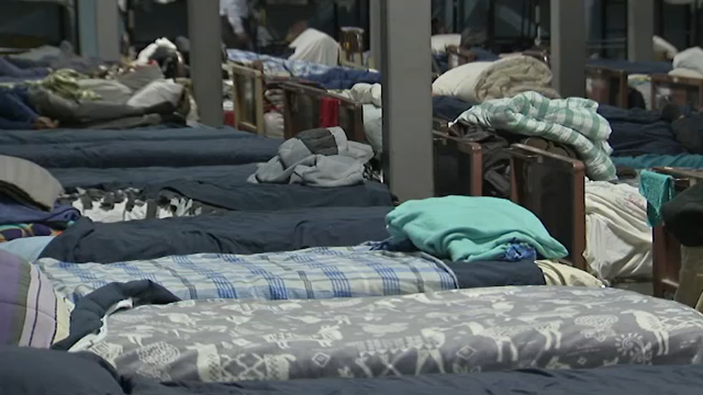

Chicago's Warming Centers: An Escape from the Cold
By Nora Rosenfeld

Chicago's cold, windy weather can make winter months harsh and painful, particularly for the city's large unhoused population, who don't always have the option of staying indoors to keep warm. Fortunately, the City of Chicago operates warming centers, where citizens can go to escape the cold.
These warming centers are activated by the Department of Family & Support Services (DFSS) when temperatures reach 32°F and below.
On President's Day, which falls this year on Monday, February 17, many warming centers are closed for the holiday. According to the Farmer's Almanac , the mean temperature for this day historically is 11.1°F, a temperature which would generally trigger warming centers to be open. Fortunately, some warming centers will still be open, and some will be opening specifically for the holiday.
This map includes the locations of all of Chicago's warming centers, and those open on President's Day are denoted with a star.
In March of 1983, the United States passed the Emergency Jobs and Humanitarian Act, which established the first major source of public funding to states for food and shelter. The funding was divided equally between a national board and states nationwide, with Illinois receiving $2.5 million in the first year.
In the first year of the program, services consisted of emergency shelter and food assistance. Over the years, however, services were expanded to include transitional shelter, and in Chicago, warming centers and a toll-free homeless assistance hot-line.
Today, there are a few different types of warming centers, operated by different departments.
For those without shelter in Chicago during the winter months, the cold is more than just uncomfortable. It is potentially life-threatening.
Frostbite can occur when temperatures drop below freezing. The colder the temperature, the faster frostbite will set in. Aditionally, wind chill, which Chicago is famous for, increases heat loss from the body making frost bite more likely.
Once temperatures hit negatives with wind chill, frost bite can occur in as little as 30 minutes. Severe frostbite can lead to conditions such as hypothermia, a dangerously low body temperature which can be fatal, as well as irreversible tissue death which may require amputation.
If frostbite is suspected, it is important to get out of the cold as quickly as possible and seek medical attention immediately. Symptoms of frostbite include:
{kind=link}
{kind=link}